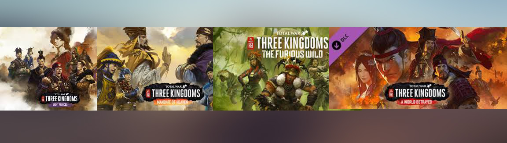

Total War: Three Kingdoms
On Three Kingdoms I was primarily the key contact for Battle and the Contextual Combat Potential (CCP) tool related systems for QA.
My Responsibilities included:
- Implement/Contribute to design decisions based on unit balance feedback from team members and community.
- Data collection and analysis, for Contextual Combat Potential system (CCP Tool) used to inform Battle Design Decisions (Game Balance)
- Creation of LUA Scripts for automated on demand testing framework “GSAT”.
- Training and onboarding for new QA staff in relation to battle and CCP tool.